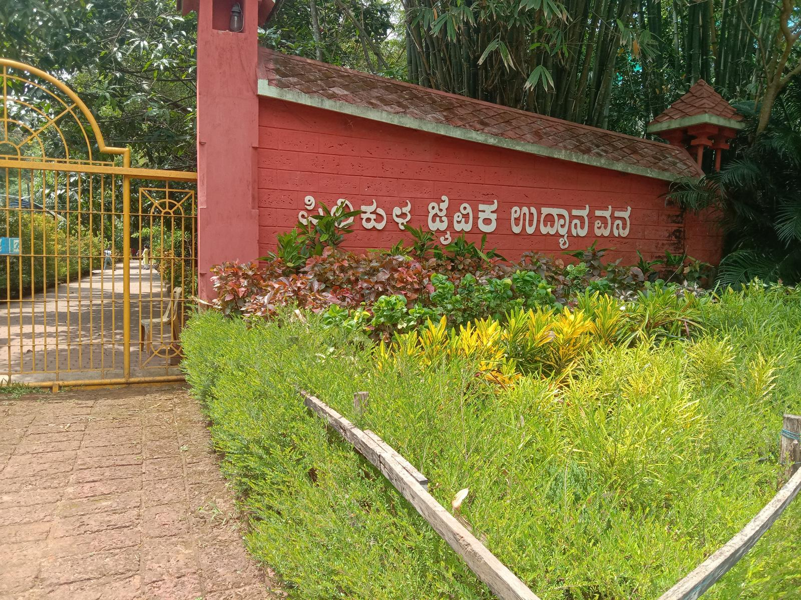
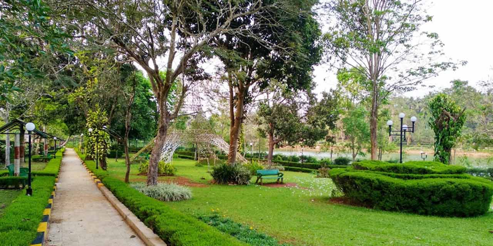

Pilikula Nisarga Dhama is a major Eco-Education and Tourism Development Project promoted by the District Administration of Dakshina Kannada in the beautiful city of Mangaluru in Karnataka State, India. Pilikula is an integrated theme park with wide variety of features; It has many attractions of cultural and scientific interest. Pilikula extends over an area of 400 acres along the banks of Gurupura river. The Pilikula Biological Park is one of the major attractions of Pilikula Nisarga Dhama. The park has an area of 150 acres. In accordance with prevailing laws, the Central Zoo Authority of India has recognized the park as a major zoo. As per modern zoological practices, the animals are kept in spacious enclosures closely resembling their natural habitat.

The Pilikula Nisarga Dhama Society has developed this area to offer scenic beauty and peace. Pilikula has a huge lake encircled by gardens. Swans and ducks swim in the lake and sometimes occupy the gardens. Boating facilities are available in the lake. Couples prefer pedal boats; larger parties use motor boats that carry 10 to 15 people.
On the other side of the road, there is a zoo featuring several wild animals. The animals are not kept in cages but are in the open, with more natural barriers, such as wide trenches or wire mesh, to separate them from visitors. There are tigers, leopards, bears and other wild animals inside the park. There is also a variety of snakes and birds in the zoo.